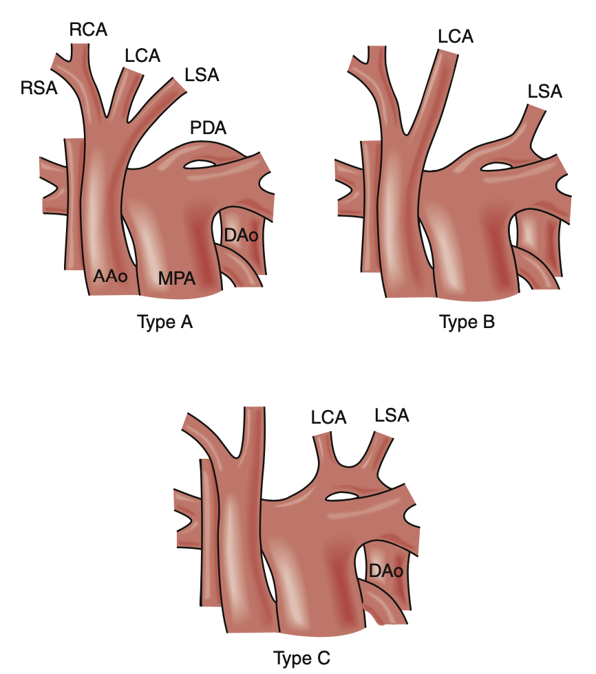
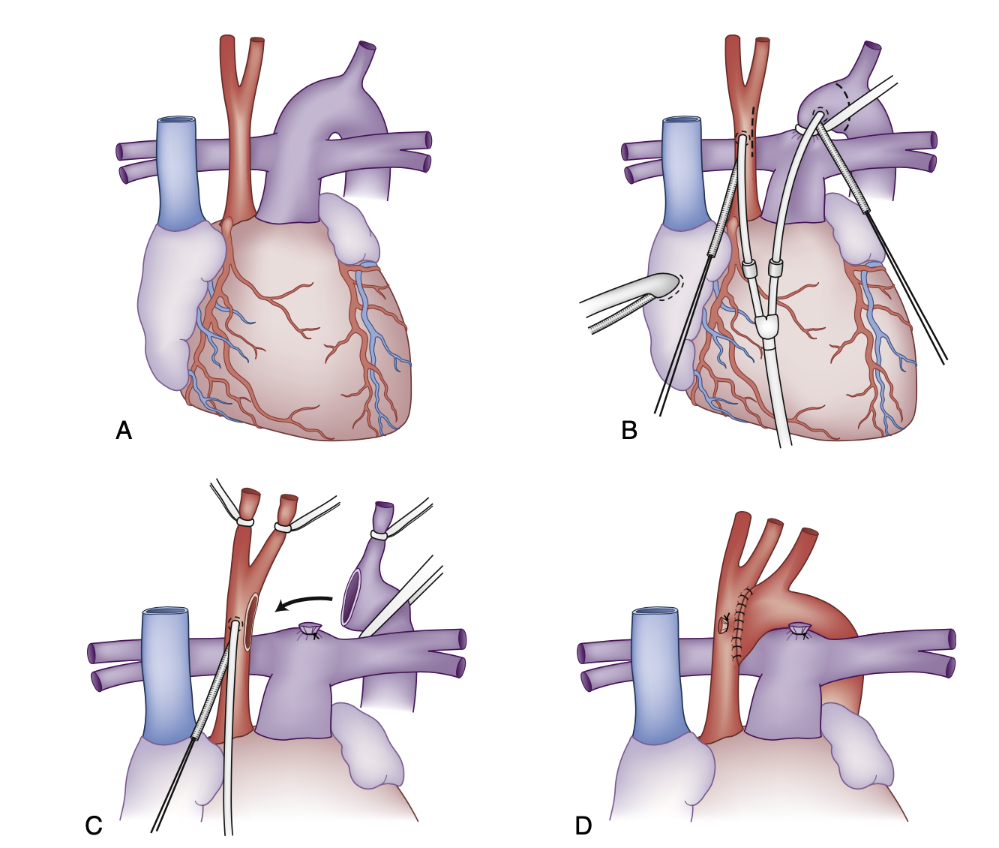

- 定義
- 流行病學
- 約佔所有先天性心臟病 (CHD) 的 1-1.3%
- 病因
- 胎兒主動脈弓未能正確融合和退化
- 常合併 VSD、PDA
- 與Turner syndrome、DiGeroge syndrome 有關
- 分型
- B型：左鎖骨下動脈與頸總動脈之間
- C型：左鎖骨下動脈近端

（圖說：主動脈弓中斷之分型）
（Reference：FIG. 59.36 Classification
of interrupted aortic arch,
Sabiston Textbook of Surgery 21st Edition）
- 病生理
- 常見發現是異常的右鎖骨下動脈（經食道後路徑
retroesophageal），起源於降主動脈。
- 通常不是單獨存在的缺陷，大多數會同時合併室間隔缺損（VSD）或開放性動脈導管（PDA）
- 導管依賴性
(ductal-dependent)
- IAA 的病童，其血流依賴動脈導管維持。一旦動脈導管關閉，病童將會出現嚴重的代謝性酸中毒，影響其血流動力學，甚至致命
- 在少數情況下，病童的動脈導管未關閉，嬰兒期可能沒有症狀而未被診斷，但這類病童會因持續的左向右分流，而漸漸產生鬱血性心衰竭的症狀
- 臨床特徵
- 動脈導管關閉：嚴重的代謝性酸中毒、血流動力學不穩、下肢發紺、缺血、休克致命
- 診斷
- 確診：心臟超音波
- 其他方法：心導管（cardiac catheterization）
- 治療
- 初步處置
- 術前輸注前列腺素 E1（PGE1）：維持動脈導管開放並糾正酸中毒。
- 機械通氣、強心劑（inotropes）：優化嬰兒的血流動力學
- 降低吸入氧濃度（FiO₂）、避免過度換氣：增加肺血管阻力，藉此讓更多血流導向系統循環。
- 手術
- 目前首選是在新生兒期進行單次全面的手術修復 (complete
one stage surgical repair)
- 經正中胸骨切開（median sternotomy）
- 使用體外循環（CPB）與短暫的循環暫停（circulatory arrest）
- 主動脈弓重建：透過直接吻合或貼片成形術（patch aortoplasty）
- 接著再進行 VSD 的關閉

(圖說：單次全面的手術修復
(complete one stage surgical repair) ，A：B 型主動脈弓間斷（Type B interrupted aortic
arch）；B：插管位置與手術切口的位置；C：降主動脈被拉至縱膈腔內，接著以端側吻合（end-to-side
anastomosis）的方式接合至升主動脈。)
（Reference：FIG. 59.37, Sabiston Textbook of Surgery 21st
Edition）
- 過去
IAA 治療：姑息性手術
- 經左側開胸（左胸廓切開術）
- 利用主動脈弓的一支分支血管作為導管來重建主動脈
- 缺點：無法一併修補心室中膈缺損（VSD）或其他心內缺損
- 若合併左心發育不全（hypoplastic
left heart）
- 不能進行完整修補
- 先接受
Norwood procedure，後續再進行 Fontan
procedure 來重建循環
- 貼片成形術優點
- 確保左心室流出道（LVOT）狹窄獲得充分緩解
- 減少吻合處的張力
- 降低術後再次狹窄（restenosis）機率
- 降低氣管及支氣管受壓（tracheobronchial
compression）的風險
- 但德州兒童醫院（Texas Children’s Hospital）的研究團隊報告指出，使用原生組織直接吻合修補（primary tissue-tissue repair），可有助降低日後主動脈弓再次狹窄的風險
- 預後
- 併發症
- 術後風險
- 氣管及支氣管受壓
- 主動脈弓再狹窄
- 復發性主動脈弓阻塞
- Reference
- Sabiston
Textbook of Surgery 21st Edition
- Schwartz's
Principles of Surgery 11th Edition